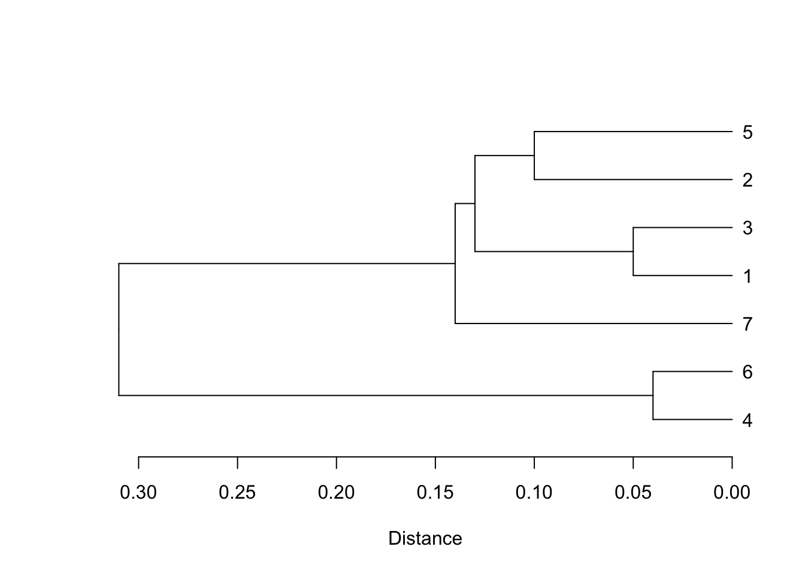
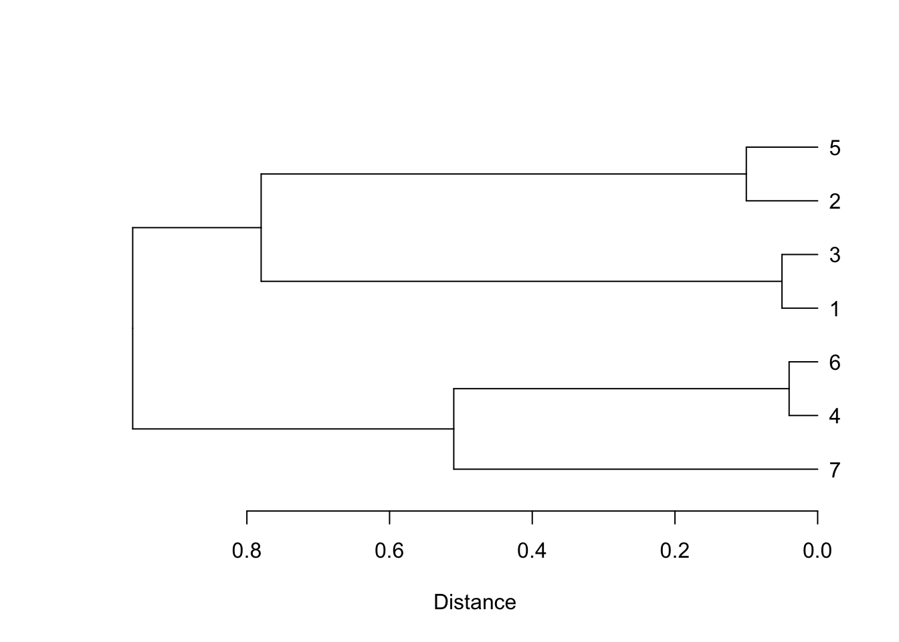
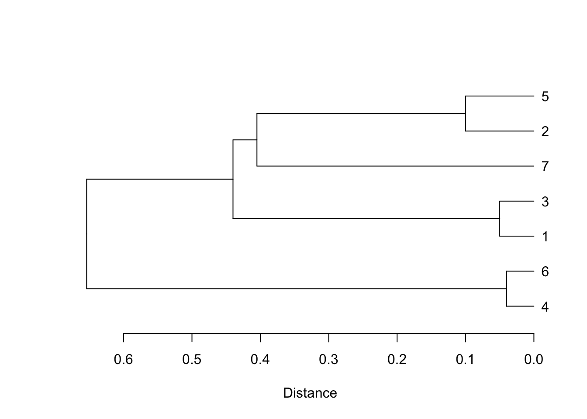
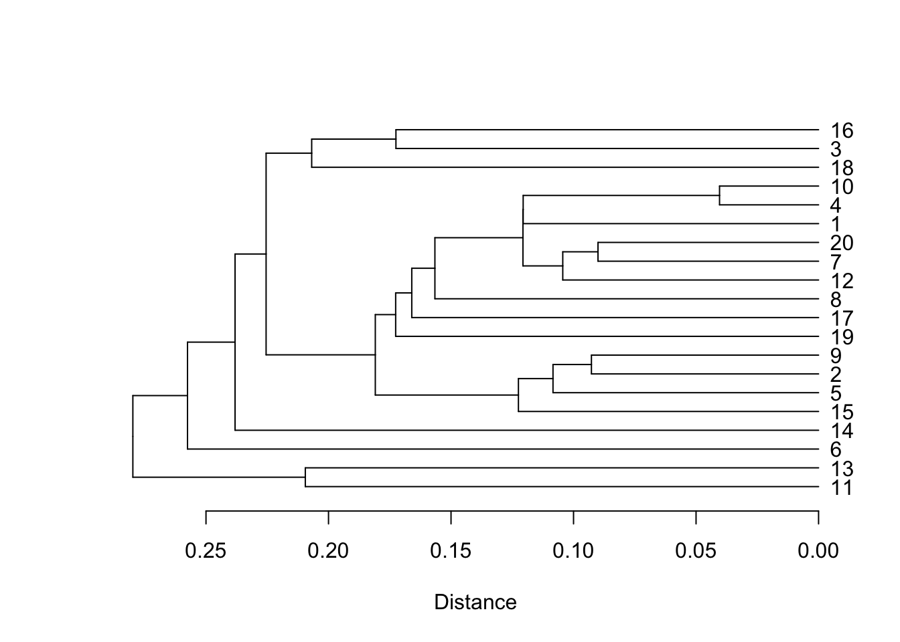

23 Cluster Analysis (Ch.25)
One the interesting features of similarity measures is the uses to which they can be put. What can we do with the information that some cases are more similar to one another than they are to other cases? How do we decide which are which (i.e., are there “natural” groups in our cases)? Questions like these lead people towards cluster analysis.
Table 25.1 provides a a sample of similarity coefficients that Drennan uses for the first several examples. Because the clustering tools in base R work with dissimilarity (aka distance) matrices, we’ll subtract Table 25.1 from 1 before proceeding further. Note that as we proceed, where Drennan is looking for the largest similarity, we are looking for the smallest dissimilarity.
coeffs <- structure(c(0.34, 0.95, 0.69, 0.87, 0.12, 0.86, 0.22, 0.04, 0.9, 0.15, 0.76,
0.11, 0.75, 0.37, 0.32, 0.63, 0.96, 0.59, 0.27, 0.43, 0.49),
Size = 7L, class = "dist", Diag = F, Upper = F)
coeffs## 1 2 3 4 5 6
## 2 0.34
## 3 0.95 0.22
## 4 0.69 0.04 0.11
## 5 0.87 0.90 0.75 0.63
## 6 0.12 0.15 0.37 0.96 0.27
## 7 0.86 0.76 0.32 0.59 0.43 0.4923.1 Single Linkage Clustering
To run cluster analyses, base R provides the hclust() function, which can run single linkage clustering, complete linkage clustering, and average linkage clustering (plus a few others; see ?hclust).
The analysis happens in hclust(), whose results we can write as an object and examine before plotting it.
## List of 7
## $ merge : int [1:6, 1:2] -4 -1 -2 2 -7 1 -6 -3 -5 3 ...
## $ height : num [1:6] 0.04 0.05 0.1 0.13 0.14 0.31
## $ order : int [1:7] 4 6 7 1 3 2 5
## $ labels : NULL
## $ method : chr "single"
## $ call : language hclust(d = coeffs, method = "single")
## $ dist.method: NULL
## - attr(*, "class")= chr "hclust"## [,1] [,2]
## [1,] -4 -6
## [2,] -1 -3
## [3,] -2 -5
## [4,] 2 3
## [5,] -7 4
## [6,] 1 5The $merge object that is part of the hclust() output contains the details of the clustering procedure. Compare to the 8 steps that Drennan outlines on pp310-311. In the notation used here, ‘-4’ indicates the fourth case, while ‘2’ indicates the cluster defined in row 2.
We can produce a reasonable facsimile of Figure 25.1 by converting this hclust object to a dendrogram using as.dendrogram() and then simply plotting it. Recall that the result measures distance rather than similarity, so is the mirror image in that sense; plotting a horizontal dendrogram also defaults to a left-pointing dendrogram, so it mirrors Drennan that way as well. Note also that the order of the cases doesn’t matter - it’s how they are grouped that is of interest (the former won’t match Drennan, but the latter will). If you want to prettify your dendrograms, you can experiment with the dendextend package.

23.2 Complete Linkage Clustering
As noted above, hclust() will also cheerfully carry out complete linkage clustering; we just have to change the ‘method’ argument.
## [,1] [,2]
## [1,] -4 -6
## [2,] -1 -3
## [3,] -2 -5
## [4,] -7 1
## [5,] 2 3
## [6,] 4 5Examining completeclust$merge will show you that the clustering sequence matches that outlined on p312. Plotting the dendrogram will reproduce Figure 25.2, with the same differences in the structure of the plot as noted above for Figure 25.1.

Note that the plot highlights an error in Drennan’s figure: we have plotted case 7 where the text describes that it should be (attached to 4 and 6), while Figure 25.2 mistakenly clusters it with 1 and 3.
23.3 Average Linkage Clustering
The process is the same for average linkage clustering, again implemented with a change to the ‘method’ argument.
## [,1] [,2]
## [1,] -4 -6
## [2,] -1 -3
## [3,] -2 -5
## [4,] -7 3
## [5,] 2 4
## [6,] 1 5As above, the $merge object will show you the process, which you can compare to pp313-315. Also as above, we can plot the dendrogram:

23.4 Clustering the Ixcaquixtla Household Data
To try cluster analysis on the Ixcaquixtla households data we need to recreate the distance matrix from Chapter 22:
ixcaq <- read.csv("data/Drennan_datasets/Drennan_2009_Table21-1.csv", header=T)
ixcaq$Energy.Invested.in.Burials <- dplyr::recode_factor(ixcaq$Energy.Invested.in.Burials,
`1` = "low", `2` = "medium", `3` = "high")
ixcaq_gower_dist <- daisy(ixcaq[,-1], metric = "gower", type =
list(ordratio = 3, asymm = c(4, 6)))Figure 25.4 is produced by single-linkage clustering on the Ixcaquixtla data, which we can approximate (keeping in mind what Drennan says about the results):
ixcaq_clust <- hclust(ixcaq_gower_dist, method = "single")
plot(as.dendrogram(ixcaq_clust), horiz = T, xlab = "Distance")
## [1] 11 13 6 14 15 5 2 9 19 17 8 12 7 20 1 4 10 18 3 1623.5 Clustering by Variables
Figure 25.5 clusters by the Ixcaquixtla household variables, for which we’ll first calculate the correlation matrix and then subtract it from 1 to get distances. To calculate the correlation matrix we have to convert the ‘Energy Invested in Burials’ variable to numeric codes. We can then carry out single linkage clustering as above.
ixcaq$Energy.Invested.in.Burials <- as.numeric(ixcaq$Energy.Invested.in.Burials)
ixcaq_vardist <- as.dist(1 - abs(cor(ixcaq[,2:11])))
ixcaq_varclust <- hclust(ixcaq_vardist, method = "single")
par(mar=c(5,4,4,8)) #adjust plot margin to make space for labels (see ?par)
plot(as.dendrogram(ixcaq_varclust), horiz = TRUE, xlab = "Distance")
23.6 Problem Set
Since Drennan does not provide a problem set for cluster analysis, we’ll use one adapted from Shennan ((1997), Ch. 11).
The excavator of a series of Andean sites is interested in the factors affecting the occurrence of different plant species at those sites: possibilities are site location, the period to which the sites belong, and the status of the parts of the site from which the plant remains come. Abashed at their inability to use R, they’ve come to you with a data table and thrown themselves on your mercy. The table below (and available here) shows the site name, phase and social status (elite versus commoner) for ten different site areas. For each area the ubiquity of four different plant species is recorded, i.e. the percentage of excavated units in each site area in which that species was found.
marcas <- read.csv("data/Shennan1997_11.2_ProblemSetData.csv")
kable(marcas) %>% kable_classic %>%
kable_styling(full_width = F)| Site | Phase | Status | Maize | Solanum | Chenopodium | Legumes |
|---|---|---|---|---|---|---|
| Tunanmarca | 1 | commoner | 8 | 17 | 31 | 0 |
| Tunanmarca | 1 | elite | 22 | 28 | 59 | 19 |
| Umpamarca | 1 | commoner | 43 | 25 | 66 | 13 |
| Umpamarca | 1 | elite | 44 | 47 | 78 | 6 |
| Hatunmarca | 1 | commoner | 0 | 0 | 20 | 0 |
| Hatunmarca | 1 | mixed | 67 | 6 | 67 | 0 |
| Hatunmarca | 2 | commoner | 63 | 13 | 83 | 0 |
| Hatunmarca | 2 | elite | 62 | 33 | 74 | 7 |
| Marcamarca | 2 | commoner | 60 | 20 | 52 | 8 |
| Marcamarca | 2 | elite | 71 | 7 | 43 | 0 |
Calculate a distance matrix of the ten site areas, using Euclidean Distance on just the numeric variables (the four columns of plant ubiquity, which conveniently don’t require scaling). Discuss very briefly how else you might calculate a distance matrix with these data, and what the advantages/drawbacks might be (consider, e.g., other distance measures, which variables to include, and what preparatory work might be necessary).
Carry out a cluster analysis on the distance matrix that you created in (1), using the ‘average linking’ clustering method. Plot your cluster analysis results. What are the characteristics of the different clusters in terms of the plant species composition of the site areas? What factor(s) appear to relate most strongly to the plant species profiles?